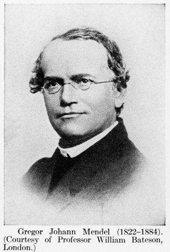
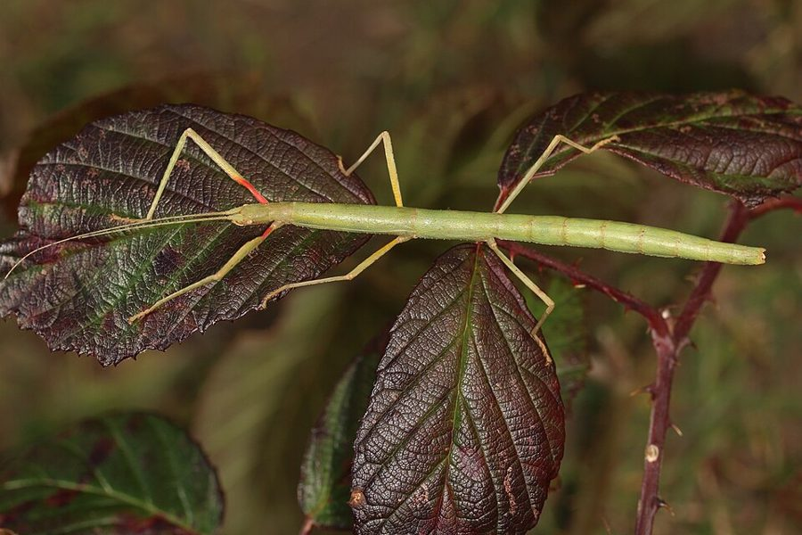
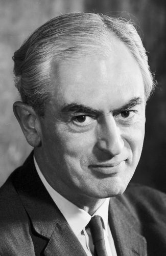
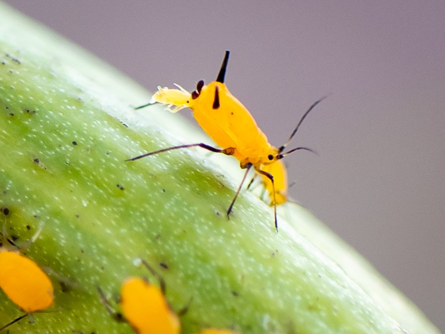

approaches the ideal
… to a high degree, approaches the ideal …
接近（不可分的）理想状态
原书 approaches 是斜体，强调「接近」而不是「就是」。基因不是真的不可分，只是很少被拆开。
第 3 章的后半。上半页讲清了「基因」在这本书里指什么，这半页回答：为什么偏偏是它，而不是个体、群体或物种，当得了自然选择的单位？立论只用一节，后面三节处理作者自己点出的三个麻烦：基因要合作才造得出身体，个体为什么会老死，性为什么存在。读的时候抓两条线：哪些话是「按定义」成立的，哪些是对世界的判断；作者在哪里把难题解决了，在哪里坦白绕开了。
上半页停在第 37 段：严格说，这本书该叫「有点自私的一大段染色体」，作者图顺口才叫它 The Selfish Gene。第 38 段一开头他就说，现在回到了第 1 章结尾的地方，那里（第 1 章第 32 段）他宣布选择的基本单位是基因，这一页来兑现。第 57 段把「基因之间怎样合作」推到第 5 章末尾再谈；第 76 段预告下一章讲生存机器本身怎样行动。
身体是几千个基因合作造的，会老会死，还靠性来生育。在这样的世界里，凭什么说选择的单位是基因？
读的时候带着这几个问题。不用先找答案，读完回来对照「检查一下理解」。
这半页先立论，再补漏洞。§6 是论证本身：先说一个选择单位要满足什么，再拿基因、个体、群体一一去比，中间几段修辞很浓，钻石、云、洗牌，读的时候分清哪句是比喻、哪句是论点。第 49 段作者自己说「主要的意思已经讲完」，读到这里会以为章要结束了，其实才过一半：后面是他主动承认的三个复杂之处。§7 处理第一个，用肥料和赛艇两个类比；§8、§9 回头检查论证依赖的两个事实，个体会死、有性生殖和交换。§8 讲得很完整，§9 他明说要绕开，转而谈多余的 DNA，最后一段回到「到底是个体还是基因」的争论。
作者落在哪：选择单位得能以许多拷贝的形式活很多代，只有小段的基因做得到，个体和群体都太短命。基因在造身体时合作，传代时仍各自接受检验；衰老在这个框架里讲得通，性则只说「从基因看没那么怪」，承认这里近乎循环论证。
这一页是原书第 3 章的第 6–9 节。原书各章没有小标题，粗体的节名是本站起的，下面是这一节第一段开头的几个词，在电子书里搜它就能跳过去。读完打个勾。
先把这一页用到、作者默认你懂的几个概念讲一遍。讲的是概念本身，作者拿它推出什么，读原书时自己看。前面讲过的基因（本书的定义）、基因库、等位基因、交换、复制因子、长寿、生殖力、复制精确性、选择单位，点进去看。
十九世纪多数人以为遗传像兑颜料：父母的特征在孩子身上调和成中间色。这样一来，每代的差异都被平均掉一半，一个新出现的有利变化几代之后就稀释得看不见了，选择无从下手。孟德尔（Gregor Mendel）的豌豆实验说明遗传更像一颗颗珠子：父母各给一份，在孩子身上不融化，原样传到下一代，隐性的那份隔代还能再露面。用程序员的话说，混合遗传是把两个浮点数取平均，算几轮就全一样了；颗粒遗传是把离散的整块复制、拼装，块本身不变。有了「不融化」，变异才留得住，自然选择才有东西可挑。
在这一页：第 39 段。作者先说选择单位要以许多拷贝的形式存续很久，再借孟德尔说明小段基因为什么做得到；同时给「不可分」加了限定：只是很少被拆开，接近理想的颗粒。
「人为什么会老」有两层问法。一层问机制：细胞损伤、复制出错怎样积累。另一层问演化：自然选择为什么没把衰老淘汰掉。Medawar 1952 年的回答是：就算不衰老，野外的个体也会被天敌、疾病、意外一个个带走，活到高龄的本来就少，而且它们多半已经生过孩子，所以一个只在晚年发作的坏基因，选择几乎看不见它，它就在基因库里攒下来（今天叫突变积累）。Williams 1957 年补了一种：有些基因年轻时有好处、年老时有害，选择照样偏爱它（拮抗多效性）；Kirkwood 1977 年又从「资源先给生殖，身体维修只做够用」来讲（可抛弃体细胞）。打个比方：一个只在开机十年后才触发的程序缺陷，测试永远测不到，也没人去修，因为几乎没有机器能用到那一天。
在这一页：第 58–62 段。作者用它说明：个体会死这件事，在基因选择的框架里解释得通，论证的这块基石不怕追问。
设想两种雌性，每只一生生的孩子一样多。一种不交配，自己「克隆」出女儿，女儿个个都能再生；另一种要和雄性交配，孩子里一半是儿子，儿子自己不生。这样每过一代，前一种的数量增长的倍数是后一种的两倍。换成基因的账也一样：有性的母亲，每个孩子只带她一半的基因。1970 年代 Williams、Maynard Smith 等人把这笔账算明白，常叫「性的两倍代价」。可自然界里有性生殖极为普遍，所以它一定有足以抵消代价的好处。候选的解释主要有两类：洗牌能更快地把有利突变凑到一起、把有害突变清出去；在和寄生虫的军备竞赛里，后代换一副组合更难被盯上（红皇后假说）。至今没有公认的单一答案。
在这一页：第 71 段，作者说理论家觉得性难解释，是因为站在个体的角度算「效率」；第 72 段他换成基因的角度来看。
按在书里出现的顺序排，标题前是节号。只讲到读懂这一页需要的程度。

第 39 段说，遗传是混合式的这一假设，在达尔文生前就被证明会让自然选择无法运作，让他非常苦恼。书里没点名，通常认为指的是工程师 Fleeming Jenkin 1867 年的一篇书评：一个新变异会被大群体「冲淡」（也有科学史家认为，这层意思是后人读进去的）。孟德尔 1866 年发表的豌豆论文正好能解围，但直到 1900 年才被几位植物学家重新发现，那时达尔文（1882 年去世）和孟德尔都已不在。作者说孟德尔「也许」没意识到自己发现的分量。

1989 年作者在注 10 里换了一个例子。有的竹节虫雌虫不交配也能一代代繁殖，没有有性生殖每代把它打散，那它算不算复制因子？作者说不算：剪掉它一条腿，女儿照样长出六条腿；用 X 光改了它的基因组，改动却会传下去。身体每代都由卵重新长出来，被复制的是基因组。他用复印机打比方：复印件的复印件会把新污点一路传下去，同一块印版印出来的书却谁也不是谁的祖先。
两校从 1829 年起比赛，如今每年春天在伦敦泰晤士河上，从帕特尼划到莫特莱克，约 6.8 公里。每条艇八名桨手，加一名坐在艇尾、面向桨手、负责掌舵和喊节奏的舵手（cox），所以第 53 段说一个桨手「需要八个同伴」。作者设想的教练每天把候选人随机拼成三条艇比赛，几周后从输赢里认出谁划得好。比喻对应得很细：桨手是基因，争同一个座位的是等位基因，候选人全体是基因库，风是环境。

第 58 段把衰老的演化理论归给 Medawar。有人为此批评作者，说该归 G. C. Williams：不少生物学家，尤其在美国，主要是从 Williams 1957 年那篇讲「多效性」的论文知道这个理论的。作者在注 11 里承认 Williams 把理论推进了一步，点明了 Medawar 没有强调的一环，即一个基因可以有多种效应；但他判断核心想法 Medawar 1952 年就说清了。注里还提到 Hamilton 1966 年用数学把这类理论推得更远。

第 68–69 段举了三个例子，说明交换和性都不是非有不可。雄果蝇产生精子时染色体不发生交换。蚜虫（greenfly，英国人对绿色蚜虫的叫法）在夏季可以不经交配直接生出活的女儿，女儿在母体里时，肚子里已经开始孕育下一代，所以一次能「同时」生出女儿和外孙女，都是母亲的遗传复制品。榆树靠根上冒出的新枝蔓延，相连的一片树林，遗传上可以算一个个体。
第 74 段那个「多余的 DNA 也许是寄生者」的猜想，1980 年被分子生物学家接了过去：Orgel 和 Crick、Doolittle 和 Sapienza 在同一期《自然》上各发一篇，前者的标题就叫「自私的 DNA：终极的寄生者」。他们用它来解释一个老谜题：基因组的大小和生物的复杂程度对不上。注 13 里作者回应 Gould：Gould 认为自私的基因和自私的 DNA 解释的路子截然相反，作者认为后者只是前者的一个特例。
按节排，每节前面是分节地图里的节名。标着「每个字都认识」的，是熟词生义、习语和反话，最容易读错。灰色的那几个字是原句里的位置，在电子书里搜它就能找到。
对着中译本（40 周年增订版）读的时候看这一节。下面是译本这几节和这一页尾注里会让人读错的地方：灰字是英文原文那一处的几个词，在英文电子书里搜它；方框里是译本的原句，在译本电子书里搜它。措辞别扭但意思没错的不收。全书的勘误汇总在译本勘误。
… I cannot really help being right!
译本：「以便令人信服地证明我的论点的正确性」
原文是自嘲：我这样定义基因，想不对都难。作者在承认定义里有同义反复，不是说定义帮他有力地证明了论点。读译本时把这句理解成「这几乎是按定义成立的」。
… I made much of the fragmenting effects …
译本：「我在减数分裂上付出了很多琐碎的努力」
原文：我当年跟着 Williams，大力强调减数分裂会把个体打碎。fragmenting 是「打碎」，made much of 是「大做文章」。这条注后面两处「琐碎的努力」也都是指减数分裂的打碎作用，整条注要按这个意思读。
… will, by definition, tautologously, tend to survive.
译本：「我再啰唆一句」
tautologously 是「同义反复地」，作者在说这一句按定义就成立，不需要证据。译本把它译成了一句口头的「再啰唆一句」，作者对自己论证性质的交代没了。
… It is the analogy with human …
译本：「它同人类的“竞赛理论”类似」
原文是 game theory，译本到第 5 章改叫「博弈论」。这里预告的就是第 5 章的博弈论和章末的讨论，是同一个东西。
… the time of onset of gene activity.
译本：「基因活动开始时受遗传控制的种种变化」
原文：很多进化也许就是基因「何时开始起作用」受遗传控制的改变。要点是「时间」本身在变，这正是 Medawar 理论的核心：选择会把坏基因的发作往后推、把好基因往前提。
… a direct causal link between …
译本：「直接的、偶然的关系」
原文：医生会绞尽脑汁找 S 和身体失常之间的直接因果联系，可在这个假想例子里 S 只是一个「年老」的标签，找因果是白费工夫。「偶然」意思正好不对。
… Williams elaborated the theory beyond Medawar’s treatment.
译本：「威廉斯也确实是在梅达沃之前」
原文：Williams 把这个理论发展得比 Medawar 更深入。按译本，Williams 在先，作者却归功于 Medawar，就成了作者没道理；原文的时间是 Medawar 1952 年在先，Williams 1957 年在后。
multiple gene effects) which Medawar did
译本：「或“多基因影响”的重要性」
pleiotropy（基因多效性）指一个基因同时影响好几种性状，比如年轻时有利、年老时有害。「多基因影响」读起来像许多基因共同影响一个性状，正好是另一回事。
… equivalent to her own identical twins.
译本：「它们相当于这只雌蚜虫的双胞胎」
原文是 identical twins，同卵双胞胎。要点是女儿和外孙女在遗传上都和母亲一模一样，是她的复制品；只说「双胞胎」，这层意思就没了。
… vegetatively by sending out suckers.
译本：「形成吸根」
sucker 指从根上冒出来的新枝（根蘖），榆树就靠它连成一片。吸根是寄生植物吸取寄主养分的器官，两回事。同一段后面的译本：「连接根出条」指的是同一样东西。
… Sex is not the only apparent …
译本：「性这一明显的矛盾就变得不那么」
原文：用自私基因的眼光一看就不那么费解的表面悖论，性不是唯一一个。这是转到多余 DNA 的过渡句，译本只剩下「性变得不费解」这一层，下一句的「例如」就接不上。
… With reservations, the gene pool plays …
译本：「对于现代复制因子，基因库起着原始汤」
这句前面原文还有 With reservations，作者说「基因库就像现代的原始汤」时自己打了折扣。读译本时记得这句原本是带着保留的。
… could not be more different in …
译本：「在关于它们的解释的结构上几乎是一样的」
could not be more different 是「再不同不过」。Gould 主张自私的基因和自私的 DNA 解释的路子截然相反，作者反驳说没那么不同。译本两处都译成了「几乎是一样的」，整条注的争论就看反了。
… I find his reasoning wrong but interesting …
译本：「我找到了他在推理上的错误」
原文：我觉得他的推理错了，但有意思；顺带一提，他也客气地告诉过我，他读我的东西通常也是这个感觉。接着那句「既不错也没意思」是在接这个玩笑。
at the gene level, altruism must be bad and selfishness good.— §6 第 48 段。本站译：在基因这一层，利他必定是坏的，自私必定是好的。
全书最常被断章取义的句子之一，常被引来说「人天生自私」。读它要连着上下文：这里的「好」「坏」只指「留得下来、留不下来」，「自私」「利他」是第 1 章按效果下的定义，主语是基因，不是人；作者紧接着说它是「按定义、同义反复」得出的。它说的是记账规则：一个基因只有让自己的拷贝比等位基因多，才会在基因库里留下来。它没有说个体的行为、更没有说人应该怎样。
we shall always keep a sceptical eye on our metaphors, to make sure they can be translated back into gene language if necessary.— §9 第 75 段。本站译：我们会一直用怀疑的眼光盯着自己的比喻，确保必要时能把它们翻译回基因的语言。
这是作者给全书立的规矩，口气是认真的承诺。后面的「基因想要」「母亲盘算」「操纵」都是简写，每一句都应该能还原成「这样的基因在基因库里会变多还是变少」。读后面的章节，碰到拟人的句子，可以自己练一练这种还原；还原不了的，就是比喻走过头了。
正文里的星号是 1989 年第二版加的，点了跳到书后的尾注。下面是这一页的每个星号：注里说了什么，值不值得现在就点开。英文是星号前紧挨着的几个词，在电子书里搜它就能找到那个星号。
… as a significant unit of natural selection.*
正文第 42–43 段的理由是个体太大、太短命，有性生殖每代把它打碎。作者说这只说对了一半：要是只有这条理由，不交配的竹节虫就该算一个巨大的复制因子。真正的理由是个体身上的改变不遗传，断一条腿不会传下去，改了基因组却会；被复制的是基因组，身体每代从卵重新长出来（见上面「书里的人和研究」）。复印机的比方很好懂，一定要点开。
… thinking in terms of gene selection.*
有人批评作者没把这个理论归给 Williams。作者守住原判：核心想法 Medawar 1952 年就有了，但他承认 Williams 补上了必要的一步（一个基因多种效应），Hamilton 后来又推进了一步。注末他有点不服气：医生给他写过很多信，却没人理会他「骗基因」延寿的设想，他仍不觉得这个想法明显是傻的。可跳，最后两句有意思。
… What is the good of sex?*
只有一段：到 1989 年，性有什么好处仍旧悬而未决，列了几本讨论它的书，说他最看好的新想法是 Hamilton 的寄生虫理论，并推荐一本通俗介绍。很短，可以顺手点开，知道作者押的是哪一边（今天怎样，见「对照今天」）。
… survival machines created by the other DNA.*
注里说这个猜想被分子生物学家发展成了「自私的 DNA」。Gould 说它和自私的基因解释的路子截然相反：一个靠影响身体扩散，一个靠不影响身体。作者用黄蜂和老虎的条纹作答：一个为了被看见，一个为了不被看见，区别是细节，解释的结构一样。最后挑《牛津英语词典》新义项的刺。值得读，作者和 Gould 的互相调侃也好看。注里说的 p. 182 在第 10 章讲线粒体那几段。
读完这一页的几节再看。下面是作者在这几节里的论点，由本站按论点重新组织，不按原书的顺序；每条下面是依据所在的段落，拿不准就回书里那几段再读一遍。
作者给的条件是：数量多，且至少潜在地能以拷贝的形式存续很久。遗传是颗粒式的，小段基因很少被拆开，能原样穿过许多代；有性生殖的个体只此一份，孩子只有它的一半，群体又不断和别的群体混合。（1989 年的尾注改成：根本理由是个体的改变不遗传，打碎只是一半。）
§6 第 39、42–46 段，注 10作者自己说，他是把基因定义成「能活得够久、当得了选择单位的那段染色体」，所以想不对都难；基因层面利他必坏、自私必好，也是「按定义、同义反复」推出的。他在意的是这个定义好用，不是它被证明了。
§6 第 38、46–48 段没有哪个基因单独造出一条腿，「某某的基因」说的是它造成的差异。好基因是在基因库其他基因的背景下表现好：赛艇的教练只看输赢，久而久之也能认出好桨手。同样的牙齿基因，在食草动物的基因库里就是坏基因。
§7 第 49–56 段借 Medawar：晚年才发作的有害基因躲过了选择，攒在基因库里。由此引出的两种延寿办法，作者说只是推测，第一种没人会当真去做；理论在逻辑上必有几分对，但不一定是哪种具体衰老的正确解释。
§8 第 58–67 段他说要绕开这个难题，只指出：从个体算效率，性吃亏；把「有性」看成一个基因的性状，它只要对自己有利就够了。他坦白这差点是循环论证，因为整个论证本来就以性存在为前提。多余的 DNA 他也用同一种眼光看：最简单的解释是寄生或搭便车。
§9 第 71–74 段合起来：这半页兑现了第 1 章的宣言：选择直接作用在个体上，长期留下的后果却是基因频率的变化，两种说法不冲突。作者要读者带走的是一个习惯：解释任何特征，先问它让哪些基因在基因库里变多或变少。
第 3 章合起来：上半页讲「基因是什么」：DNA 复制自己，并单向地、间接地造出身体；有性生殖和交换把基因组合不停打散，于是作者照 Williams 把基因定义为能活够多代、充当选择单位的一段染色体，越短越长寿，定义是渐变的。下半页讲「为什么是它」：只有这样的小单位够长寿、拷贝够多，个体和群体都是过眼云烟；然后检查合作、死亡、性三个前提，前两个讲通了，性则坦白搁置。
这本书 1976 年出版。下面挑出这一页里能被后来的研究检验的说法，分「书里 / 当时 / 今天」三栏，并给一个结论。结论判的是标题里「书里的说法：」后面那一句。全书的这一节汇总在对照今天。
读完作者的论点，再看它站不站得住。每一块摆出三样：主流怎么看，作者怎么看，本站的评论。最后一句是本站对这一页的总体判断。
主流看法：「选择单位」之争延续了几十年。Sober 和 Lewontin 1982 年指出，把一切都折算成单个基因的得失，账总能算平，却可能说错原因，比如杂合子占优时，一个基因好不好要看它和谁配对。后来常用的一种区分是：基因是被复制传下去的东西，个体是和环境打交道、被选择「看见」的东西；哲学家 Okasha 2006 年的专著对此有系统的整理。
作者的看法：他自嘲这样定义就不可能不对，承认基因层面的自私是同义反复（第 38、48 段）；1989 年在注 10 里换了更硬的理由，2006 年的导言说基因是复制因子意义上的单位，个体是载体意义上的单位，两者不冲突。
本站的评论：要分开两层。「留下来的基因就是善于留下来的基因」是同义反复，本身不告诉我们什么；有经验内容的是另外几件事：遗传是颗粒式的，小段 DNA 能原样传很多代，后天的改变不遗传。这几件都是对的，所以基因视角是一个好用、可靠的记账方式。但记账方式不等于原因，第 75 段他自己也承认，选择直接作用在个体上。读者可以把「基因自私」当成一条算账规则，而不是对基因或动物动机的描述。
主流看法：大多数性状由大量微小效应的位点共同决定。Yengo 等 2022 年在《自然》上发表的身高研究，用约 540 万人的数据找到约 1.2 万个独立的相关位点。遗传学里说「某某的基因」，指的是和性状差异统计上相关的变异，不是造出这个性状的部件。
作者的看法：没有哪个基因单独造腿，环境不可缺，腿是食物做的；「某某的基因」是方便说法，说的是在其他条件不变时造成的差异（第 49–51 段）。
本站的评论：作者 1976 年这几段比很多批评他的人以为的要清醒，「看差异、不看原因」的说法到今天仍是对的，注 8 回击 Gould 时他也正是靠这几段。打折扣的地方是那个画面：「也许有一个基因让腿长一点」暗示效应可观，今天看来，对身高这类性状，单个变异的效应往往小到只能在几十万人里统计出来。所以「某某的基因」在这本书里读作「某个让这件事的概率略升的变异」，更接近真实。
主流看法：不是。性的两倍代价本来就常用基因的语言来表述：一个让雌性改为孤雌生殖的基因，会传给她所有的后代，在其他条件相同时扩散得比对手快一倍。换成基因视角，难题不但没有消失，反而更尖锐；今天的解释都在找性带来的、足以抵消这笔代价的好处。
作者的看法：理论家把个体当作要最大化自己基因的主体，才觉得性吃亏；把「有性」看成受一个基因控制的性状，它只要对这个基因有利就够了。他承认这差点是循环论证，并说要绕开（第 71–73 段）。
本站的评论：这是这一页最弱的一段，作者自己也知道。说「有性基因只要对自己有利就会扩散」是对的，但没有说明它为什么对自己有利，而这恰好是全部的难题；何况一个「无性」的突变基因同样只顾自己，账面上还更占便宜。这一段可以当作他提醒读者换个角度提问，不要当作答案。他的坦白值得肯定：注 12 到 1989 年仍说没解决。
本站的总体看法：这一页最值得带走的，是「选择直接作用在个体上，留下的是基因频率的变化」和「讲基因的作用要讲差异」两条，经得住后来的检验。「基因是自私的单位」要知道一部分是按定义成立的；衰老的解释大方向对；性的那一段只是换了提问的角度，没有给出答案。
先在心里答，再点开。答错的那题，回书里把对应那一节再读一遍。
它得以许多拷贝的形式存在，至少潜在地能以拷贝的形式存续很长的演化时间。有性生殖的个体只有一份，每代被打散，孩子只有它的一半，所以当不了。
根本理由是个体身上的改变不遗传。不交配的竹节虫没有被减数分裂打碎，可剪掉它一条腿，后代照样长六条腿；改了它的基因组，改动却会传下去。所以被复制的是基因组，不是身体。
钻石是同一块晶体长存。一个具体的 DNA 分子活不长，几个月，最多一辈子；长存的是它的拷贝，而且只是潜在地能长存，很多新基因一代都过不去。
运气是随机的，平均下来不偏向谁。一个基因如果在许多身体、许多代里一贯站在输的一边，那就不是运气差，而是它本身坏。教练也是看平均成绩认出好桨手的。
因为光有牙齿没用，还得有消化肉的肠子和整套食肉的本事。在一个由食草性状的基因主导的基因库里，它配不上伙伴，所以吃亏。它不是本身坏，是和环境里的其他基因不相容。
70 岁才发作的那个：携带者在发作前多半已经生完孩子，把它传下去了；10 岁发作的一个也传不下去。这类晚发的坏基因攒多了，老年的身体就一样样出毛病，按 Medawar 的理论，这就是衰老。
近乎循环论证：把基因当作选择单位，本来就是以性和交换存在为前提的，再拿基因视角去解释性的存在，就绕回来了。他说有办法跳出来，但不在这本书里谈。
用一句话说这一页，写给一个没读过的人。
想一想：一个团队、一个开源项目里，人来人往，留下来、被反复复用的往往是一些代码片段、习惯和规矩。如果用「谁能被一代代复制下去」的眼光看你所在的团队，哪些东西是「长寿的单位」？它们留下来，是因为对团队好，还是因为别的？
读过又忘了，从这里想起来。挑的是这一页最值得记住的模型、动物和说法，不按原书顺序；每条后面是节号，想细看就回书里那一节。全书各页的这一节都收在全书回顾。
一句话：个体是云，基因是牌：个体每代被洗散，小段的基因却以拷贝的形式穿过许多代，所以选择留下的痕迹是基因频率的变化。
教练每天随机组队比赛，久了就从输赢里认出好桨手。基因也是这样：一起划船，各自被挑，好基因是和别的基因配合得好的基因。
§71989 年作者改口：个体当不了复制因子，根本原因不是被减数分裂打碎，而是断一条腿传不下去，改了基因组才传得下去。
§6晚年才发作的坏基因躲得过选择，在基因库里越攒越多，这就是 Medawar 对衰老的解释。作者由此想到「骗基因以为身体还年轻」的延寿设想。
§8作者自嘲：把基因定义成能当选择单位的东西，再说基因是选择单位，几乎是同义反复。译本把这句译成了自夸。
§6为什么要费劲把基因和别人的混在一起？作者说太难，绕开了，只说从基因看没那么怪，并承认近乎循环论证。多余的 DNA 则可能是搭便车的寄生者。
§9